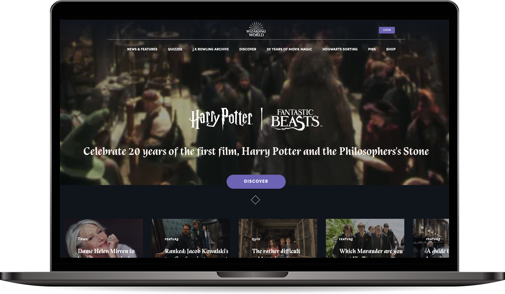
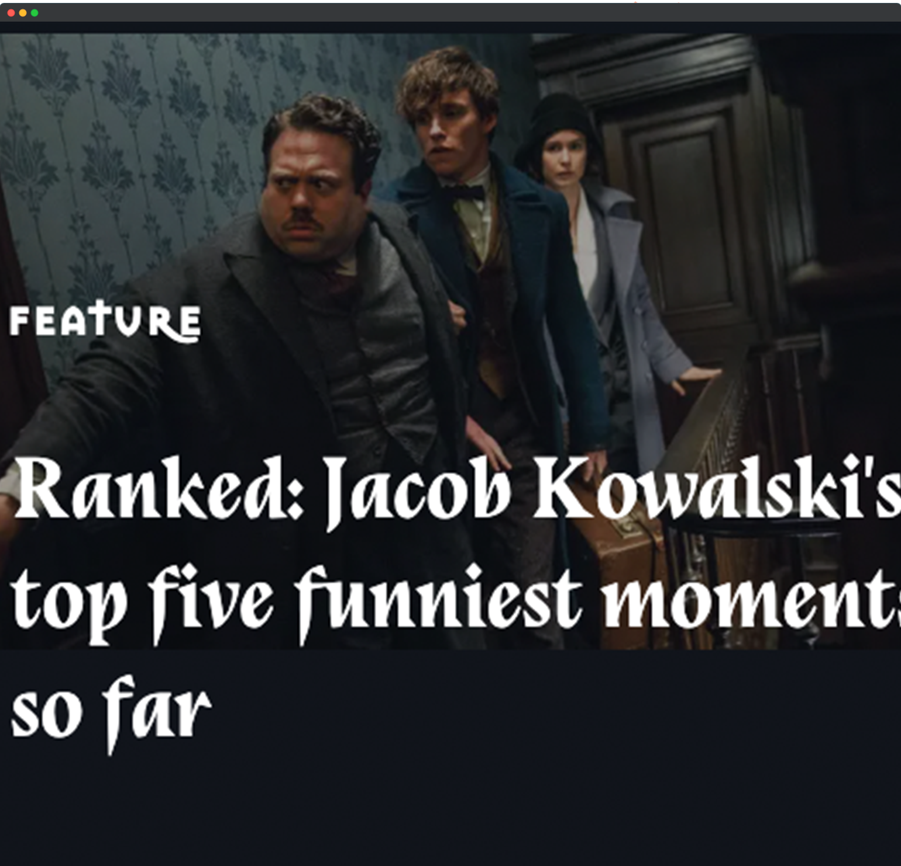
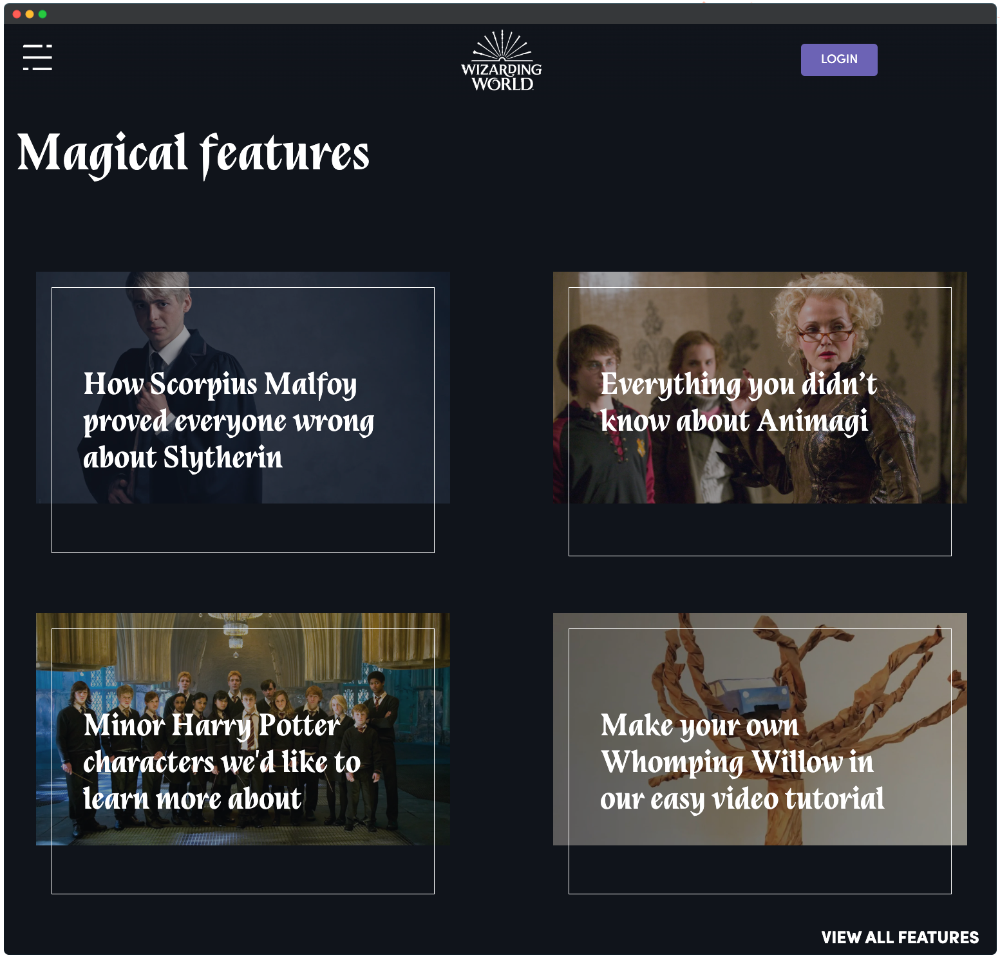
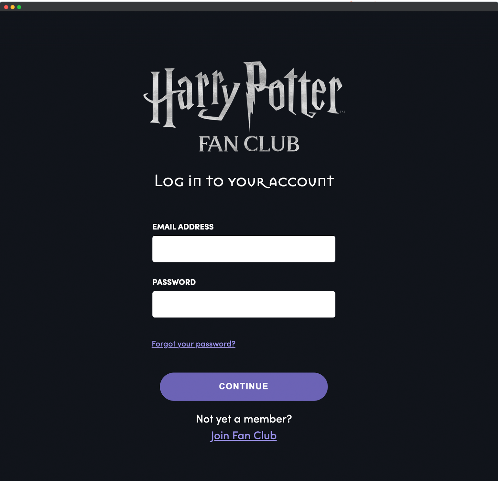

Wizarding world
Voor het vak front-end development heb ik de website van Wizarding World nagemaakt met HTML, CSS en JavaScript. De uitdaging was om de homepage en een andere pagina naar keuze, zo nauwkeurig mogelijk na te bouwen en geheel responsive te maken. Naast de homepagina heb ik dus ook de login pagina nagebouwd.
Website 
- 
- 
- 

De homepage van Wizarding World bestaat uit verschillende secties die ieder artikelen en pagina's bieden aan de gebruiker om verder te navigeren. Elk van deze secties geeft de artikelen weer anders weer, hierdoor komt er een hoop CSS kijken bij het stylen van de pagina. Verder heeft de pagina ook allemaal kleine details zoals de animatie bovenaan zodat de gebruiker ziet dat hij kan verder scrollen en een lichte fade-in als de gebruiker land op de pagina. Een leuke uitdaging dus.